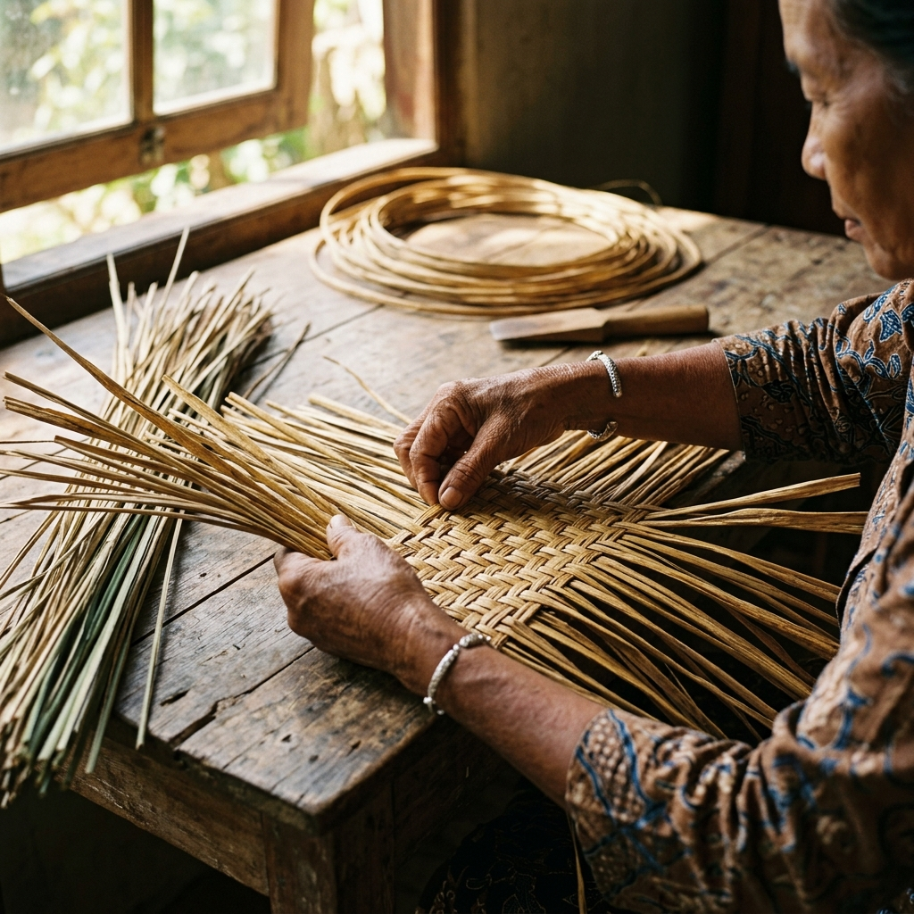
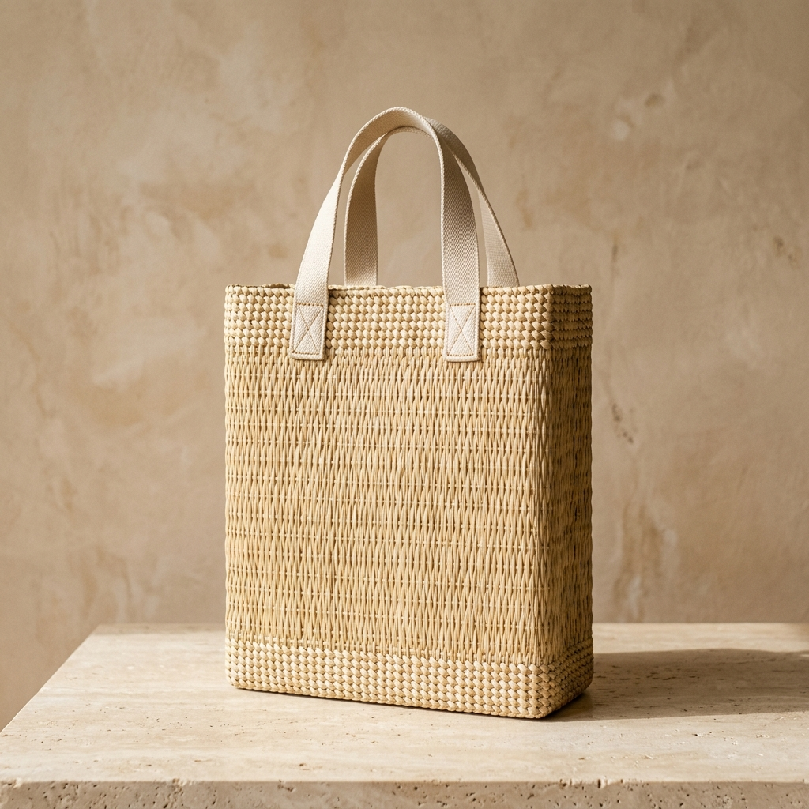

Hands that hold generational knowledge.
In South Kalimantan, the word 'Puan' respects the women who form the backbone of rural communities. For generations, they have gathered in home workshops to weave purun into household mats. Today, they apply their skill to contemporary designs.
We work directly with artisan circles, ensuring fair pay and a respectful working rhythm. Each item is made slowly, preserving the natural texture and personality of the fibers.

The Weaving Circle
Ibu Salamah
Palam Weaving Circle Leader"Weaving purun is no longer just for mats; it pays for my grandchildren's school and keeps our village peat forests wet."
Ibu Hamdanah
Fabric Integration Specialist"I specialize in lining purun bags with Sasirangan fabrics. It keeps both Kalimantan craft legacies alive together."
Ibu Halimah
Fine Diagonal Weave Expert"Fine diagonal weaving is a slow art. Doing it tells the story of our ancestors to the global fashion markets."

What is Purun grass?
Purun (Lepironia articulata) is a resilient wetland plant with hollow, cylinder-like stems. Unlike synthetic fibers, it grows without pesticides or fertilizers, flourishing in acidic swamp conditions.
We gather it by hand, select the strongest reeds, and dry them under the tropical sun. The dried reeds are then pounded flat using traditional ironwood mallets, preparing them to be woven into strong, tactile products.
Interactive Weave Showcase
Click each weave style to inspect the raw textures and technical patterns.
Raw Natural Weave
A standard flat check weave using raw, uncolored purun stalks. Maximizes fiber strength and features raw earth-cream tones.
Born in the wetlands of South Kalimantan.
Our story begins in the vast peatlands of Borneo, where the purun sedge grass grows naturally in swampy soil. These wetlands act as critical carbon sinks, helping regulate our global climate.
By harvesting wild purun rather than clearing peatlands for industrial agriculture, our artisans help keep these ecosystems intact. Conservation is not a separate initiative; it is woven into the raw materials we harvest.
Contemporary craft for everyday travel.
Explore Our Full Catalog
Access our official digital catalog on Google Drive to view our extensive collection of shapes, woven check patterns, and custom sizing options.
Open Google Drive CatalogFind Your Perfect Weave Match
Unsure which purun piece fits your daily rhythm? Answer 3 quick lifestyle questions, and our design psychology matchmaker will recommend your ideal Kalimantan companion.
A visible value chain.
Peatland Conservation
Wild purun grows naturally, preserving the wetland ecosystem without land clearance.
Traditional Prep
Artisans harvest, sun-dry, and hammer the stalks with ulin wood mallets.
Generational Weaving
Women weavers in South Kalimantan construct contemporary shapes and check patterns.
Digital Transparency
The Craft Passport provides verifiable proof of origin and artisan contribution.
Global Connection
Crafted goods travel to global buyers, carrying Kalimantan's identity to the world.
National recognition for a grassroots movement.
What started as a response to rural economic challenges in 2019 has grown into an internationally recognized brand. Empowering women across South Kalimantan villages, Purun Puan bridges traditional wisdom with international fashion.
"Wild purun, an endemic wetland plant, becomes highly valuable in the hands of South Kalimantan's women artisans. Under the Purun Puan brand, they are now forging a path to the international market."
— ANTARA NewsKey Achievements
-
🇮🇩
AKI Finalist (Kemenparekraf)
Recognized by the Ministry of Tourism & Creative Economy for exceptional local design innovation.
-
🇯🇵
Tokyo Showcase (Bank Indonesia)
Selected for PAMOR BORNEO to present premium sustainable collections to Japanese buyers.
-
✨
Gernas BBI Top 67 UMKM
Ranked among the top 67 creative brands out of 1,178 contestants in South Kalimantan.
Bring contemporary craft to your space.
We collaborate with retailers, boutique hotels, and corporate partners who value cultural authenticity and environmental transparency. Send a business inquiry to discuss custom designs or wholesale orders.
Explore the craft in person.
Come visit our creative workshop and showroom in South Kalimantan. Here, you can feel the textures of raw and processed purun, see our weaving circles at work, and explore custom collaboration ideas.